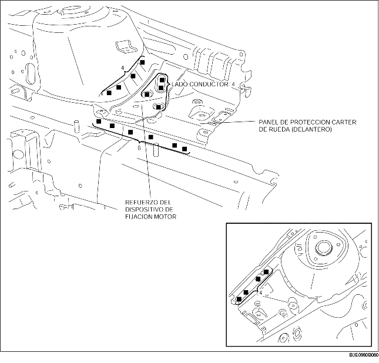

1. Cuando se instalan componentes nuevos, medir y ajustar la carrocería según necesidad para conformarse a las dimensiones estándar.
2. Antes de instalar los nuevos paneles, crear los orificios para la soldadura.
3. Instalar los nuevos componentes provisionalmente y asegurarse que se junten perfectamente.
